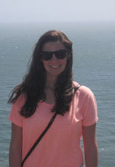
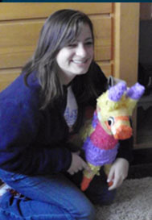

Meet the Committee
Team Leader Training
The Directors of Team Leader Training are responsible for selecting and training over 100 team leaders for the Fresh START Day of Service 2012. As a committee we aim to select a group of energetic campus leaders who will embrace the task of getting new students involved with the Penn State campus. Team Leaders will be selected by March 6th. There will then be a total of three Team Leader Training Sessions; two in the Spring 2012 semester and one in the first week of the Fall 2012 semester. These sessions will inform team leaders of new techniques to help their future volunteers get the most out of their service experience. Team Leaders are a vital piece of having an effective and successful Fresh START experience and as a committee we are very excited to get to know all of our future Team Leaders!

Emily Paskewicz
|
Hello! My name is Emily Paskewicz and I am a 2013 director of team leader training for the Fresh Start day of service! I am a junior from Bethlehem, PA, double majoring in Landscape Architecture and Geography. I was a volunteer for Fresh Start my freshman year and have remained involved ever since as a team leader for Fresh Start 2011 and as director of team leader training for Fresh Start 2012. Whether you are considering volunteering as a freshman or applying to be a team leader as an upperclassman, I would highly encourage getting involved with Fresh Start! It has opened the doors for countless new opportunities since I've been at Penn State. I am also involved on campus through a Thon Rules and Regulations committee, the Landscape Architecture Student Society (LASS), and The Penn State Ski Club. Feel free to contact me at ejp5134@psu.edu with questions or for more information!
|

Kathleen Prilutski
|
Hey! My name is Kathleen Prilutski and I am one of the 2013 co-directors of Team Leader Training for Fresh START! I am a junior from Landenberg, Pennsylvania studying mechanical engineering and minoring in Engineering Mechanics and Energy, Business, and Finance. I am super excited to be involved with Fresh START this year to help people get an amazing opportunity for volunteering. Other clubs and organizations I am affiliated with include the American Society of Mechanical Engineers, Engineering Ambassadors. Engineers Without Borders, and the Women in Program Orientation. If you have any questions, please do not hesitate to contact me at kap5436@psu.edu.
|
|